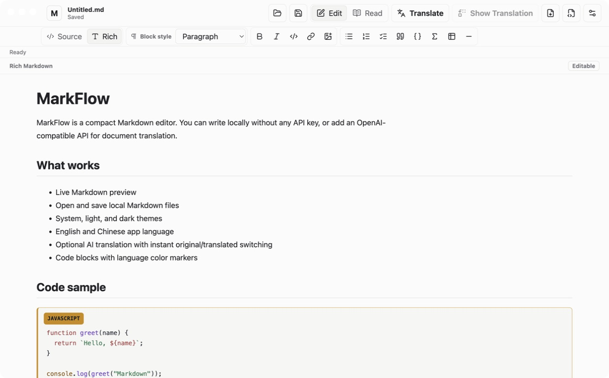

Overview
MarkFlow is a focused Markdown editor for writing and reading local documents.
Homepage screenshot

Download
Documents can be written locally without an API key; translation is optional.
A compact, local-first Markdown editor.
Updated
MarkFlow is a focused Markdown editor for writing and reading local documents.

Documents can be written locally without an API key; translation is optional.